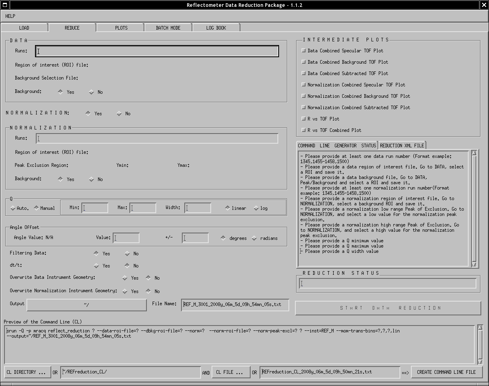
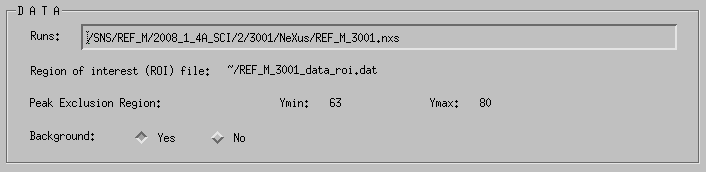
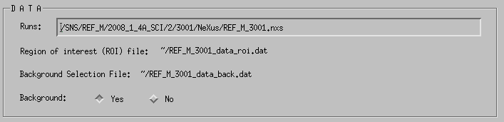
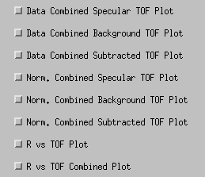
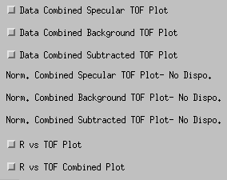
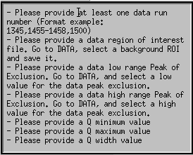
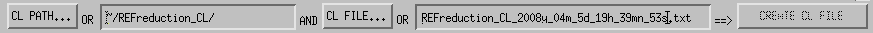

Input the Data Reduction Parameters
This is where all the parameters used in the Data Reduction will be defined and set.

REDUCE tab of the low resolution mode
- DATA
- Runs: The full path of the Data NeXus file you loaded has been automatically added to the list of Runs. You can either replace this one or add other runs. To add other data run numbers, you can either enter just the run number of the full NeXus path. The list of runs must be comma separated.
- Region of interest (ROI) file: This is where the name of the Background region of selection File you created or loaded is displayed.
- Peak of Exclusion OR Background Region: Displays the low and high pixel border of the peak exclusion region (see Picture 1) or the Background region file name (see Picture 2).

Picture 1: Data Gui with Peak of Exclusion Region used

Picture 1: Data Gui with Background Region used
- Background: Select if you want to consider the data background in the data reduction process
- NORMALIZATION Select first if you want to include a normalization in the data reduction process. If you select yes, the normalization base is displayed.
- Runs: The full path of the Normalization NeXus file (if any) you loaded has been automatically added to the list of Runs. You can either replace this one or add other runs. To add other normalization run numbers, you can either enter just the run number of the full NeXus path. The list of runs must be comma separated.
- Region of interest (ROI) file: This is where the name of the Background region of selection File you created or loaded is displayed.
- Peak of Exclusion OR Background Region: Displays the low and high pixel border of the peak exclusion region or the Background region file name.
- Background: Select if you want to consider the data background in the normalization reduction process
- Q: If the Auto mode is selected, the program will produce the output data reduction file using the full range of Q. If the Manual is used, you need to enter the range of Q (Q minimum, Q maximum, Q width and Q type) to be able to run the Data Reduction. The Data Reduction main output file (the one you can visualize in the PLOT tab is produced with this range of Qs.
- ANGLE OFFSET: Enter a value and error for the angle offset if you want to overwrite the value of the angle offset defined in the NeXus file. Don't forget to verify the units.
- FILTERING DATA: select the type of filtering you want. By default, the data reduction will excluded all the data where the error is equal or greater to the value of the data.
- dt/t: Select or not the dt/t.
- Overwrite Data Instrument Geometry: If you want to overwrite the default instrument geometry for the data file(s), click yes and select a new instrument geometry file.
- Overwrite Normalization Instrument Geometry: If you want to overwrite the default instrument geometry for the normalization file(s), click yes and select a new instrument geometry file.
- Intermediate Files: Select from the list the intermediate files you want to create.

List of Intermediate Files GUI
According to the status of the DATA and NORMALIZATION widgets, some of the intermediate files can not be selected because not available (see following picture).

Status of the Intermediate Files GUI with no normalization file.
- COMMAND LINE STATUS & REDUCTION XML FILE:
- Command Line Status: this text box displays the status of the REDUCE tab. It gives a list of information that are missing to be able to start and run the data reduction. As long as this text box is not empty, the Data Reduction process can not be launched.
- Reduction XML File will displays a XML file produced at the end of a data reduction process. In this XML file you can review the parameters used during the data reduction.

Command Line Status text box
- COMMAND LINE PREVIEW This text box displays the command line that will be run during the data reduction process.
- CREATE A COMMAND LINE FILE

This is used to produce a file that will contain a copy of the command line. This file can be used to run batch jobs and let the possibility to the user to manually change such or such parameter from the command line (the manual modification is not recommended to the general users that are not very familiar with the data reduction code used).
The location of this file can be defined using the CL PATH... button or manually entered using the text box next to this button. The name of the file can be defined using the CD FILE... button or by editing the name of file in the text box next to this button. Then click the CREATE CL FILE to create the Command Line File.